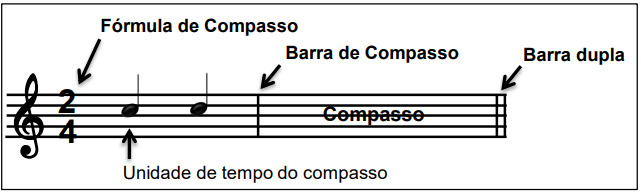

Módulo 3
COMPASSO
Para determinar o ritmo das figuras de sons e silêncio, utiliza-se o tempo (relógio) como medida
O compasso é um agrupamento de tempos. Os tempos podem ser agrupados de 2 em2 (compasso binário), de 3 em 3 (compasso ternário), de 4 em 4 (compasso quaternário), etc. Os compassos podem ser: simples ou compostos.
BARRAS DE COMPASSO
Para representar os compassos na escrita musical utilizam-se barras de compasso, também chamadas de barras simples. O espaço entre essas barras é o compasso
Para concluir a escrita musical usa-se a barra final.
Para separar períodos ou trechos da música usa-se a barra dupla
A barra dupla não tem função de barra de compasso, exceto no final de um período ou trecho quando o compasso é completo
Para indicar repetição de um treho usam-se barras de repetção chamadas sinais de ritornello. A repetição se dará no trecho entre essas duas barras
Em alguns casos pode-se usar no fim de um trecho casas de ritornello, que indicam o númerode vezes que o trecho deve ser repetido
FÓRMULA DE COMPASSO - COMPASSO SIMPLES
Os compassos binários, ternários, quaternários, etc. (simples ou compostos) são indicados no início do primeiro compasso por dois números sobrepostos, chamados FÓRMULA DE COMPASSO
Em alguns casos, pode aparecer outra fórmula de compasso no decorrer da música.
Nos compassos simples, o número superior é representado pelos números 2,3 ou 4 e indica a quantidade de tempos em cada compasso.
O número inferoir indica a figura que tem valor de um tempo, chamada Unidade de Tempo (U.T); esta é representada plos números 2 (mínima), 4 (semínima), 8 (colcheia), etc.
A soma das U.T forma a Unidade de Compasso (U.C), qie é a figura que representa o compasso inteiro.
Exercícios
I. Complete com as fórmulas de compasso seguindo o exemplo.
a - Compasso quaternário, U.T = semínima: 4/4
b - Compasso terciário, U.T = mínima: ______
c - Compasso quaternário, U.T = colcheia: ______
ACENTUAÇÃO MÉTRICA DOS COMPASSOS
Ao ouvir uma música, identifica-se o compasso como binário, ternário ou quaternário, observando-se a acentuação métrica, que é a combinação de um tempo forte (apoio) com os tempos fracos do compasso
COMPASSO BINÁRIO
1° tempo = FORTE
2° tempo = fraco
COMPASSO TERNÁRIO
1° tempo = FORTE
2° tempo = fraco
3° tempo = fraco
COMPASSO QUATERNÁRIO
1° tempo = FORTE
2° tempo = fraco
3° tempo = meio fraco
4° tempo = fraco